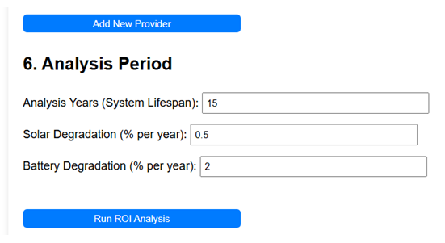
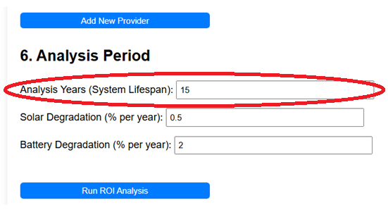
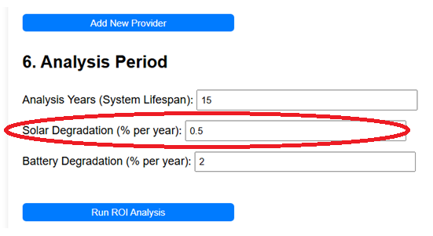

This section defines the overall duration of the financial simulation and how the performance of your solar panels and battery is expected to decrease over time.

Simulation Duration
Analysis Years (System Lifespan)
Enter the total number of years you want the simulation to run. This typically matches the expected lifespan or warranty period of the major components (e.g., 10, 15, or 20 years).
How it affects calculations:
Determines the number of years included in the financial results table and chart.
Affects long-term metrics like NPV and IRR, as savings further in the future are included (but may be discounted).
Provides the timeframe over which degradation and tariff escalation are applied.

Component Degradation
Solar panels and batteries lose some of their capacity and efficiency over time. These inputs model that gradual decline.
Solar Degradation (% per year)
Enter the estimated annual percentage decrease in your solar panels' power output. A common value is 0.5% (enter "0.5"). Check your panel datasheet for specific figures.
How it affects calculations:
Each year, the simulation reduces the calculated solar generation (from both existing and new panels) by this percentage, compounding year after year.
This rate is applied starting from the current age of your panels (using the "Existing System Age" from Section 2).
Lower solar output over time reduces savings and extends the payback period.

Battery Degradation (% per year)
Enter the estimated annual percentage decrease in your battery's usable storage capacity (kWh). Typical values range from 1% to 3% (enter "1", "2", or "3"). Check your battery warranty or datasheet.
How it affects calculations:
Each year, the simulation reduces the total usable capacity of the battery system (both existing and new) by this percentage, compounding year after year.
This rate is applied starting from the current age of your battery (using the "Existing System Age" from Section 2).
A lower battery capacity means less energy can be stored from solar or grid charging, potentially increasing grid imports during peak times and reducing savings.